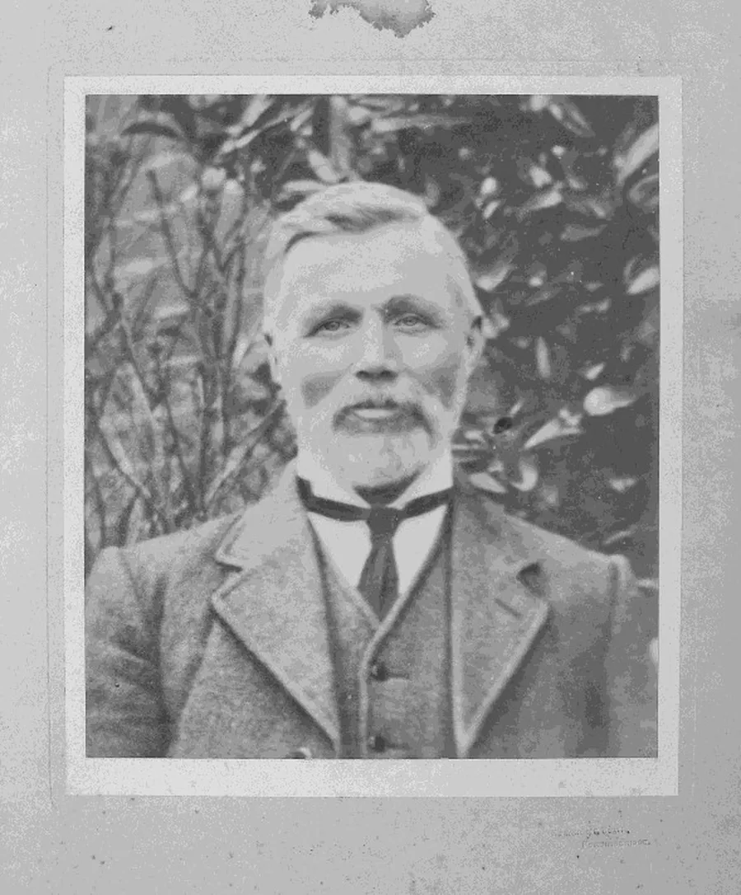
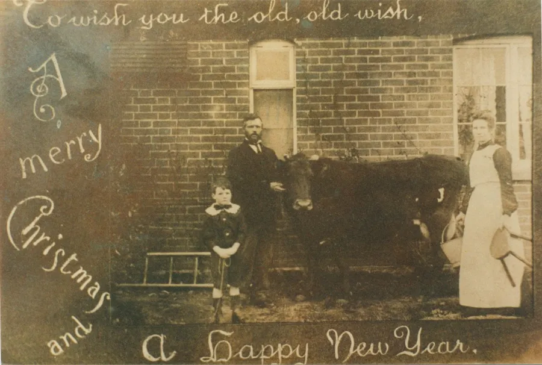
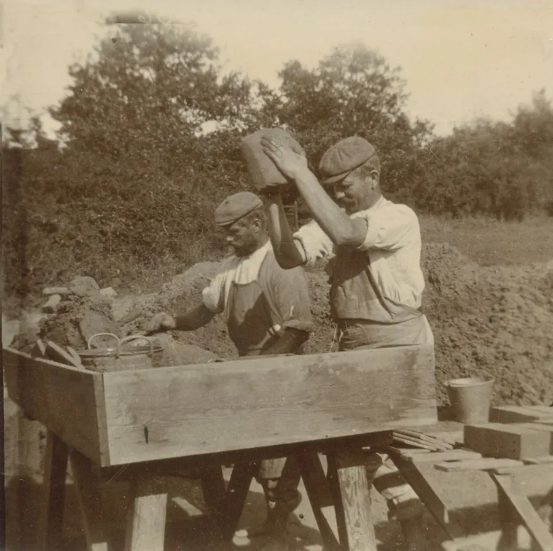
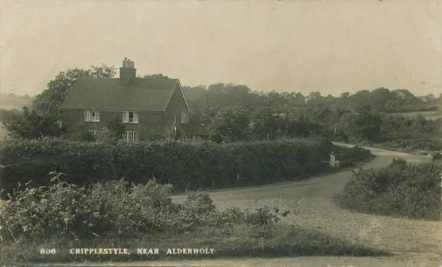
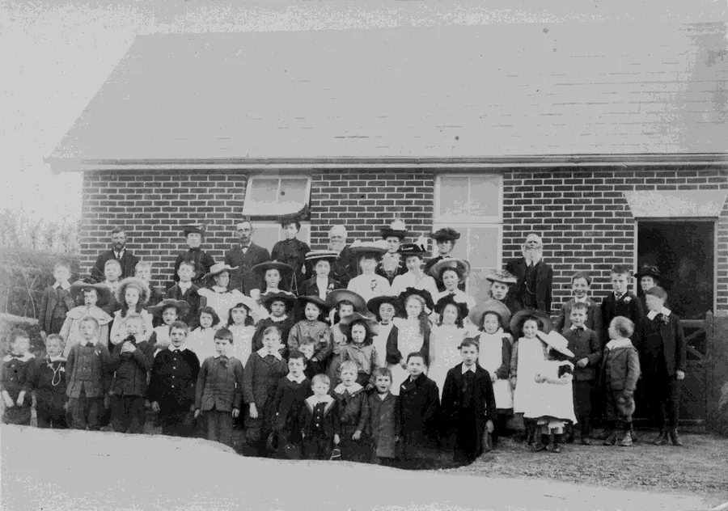
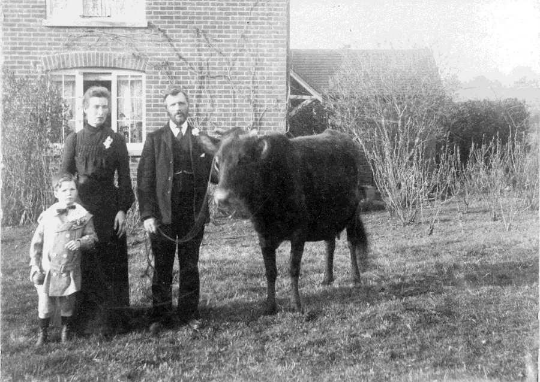

Harry Bailey (1865 – 1923)
by Adrian King

Harry Bailey was my great grandfather. I have heard so many lovely things about his life. My uncle Dennis Bailey writes
“He worked for the estate as Brickmaker and woodman. In my childhood the large pit saws were still hung up in the woodshed at Hill View. Everything I have ever heard about him was good. That is if you call being gentle, kind and thoughtful, good. He was a Sunday School teacher and Deacon at Cripplestyle and throughout my early life people have said, 'If you turn out anything like your Grandad you’ll be OK.'

"Owen Davis refers to his light-coloured beard which framed his 'kindly face.' An article in the Dorset Yearbook by Mrs. Christine Hurley in 1957/58 entitled Affairs of State says that she thought he had the face of Christ. Whenever she thinks of Christ the face which comes to her mind is that of Harry Bailey.
"My father Arthur Bailey used to relate stories about his dad many of which I do not recall but one I do remember.

"Quite regularly two of the children from the Sunday School who lived down the road used to wander, hand in hand, up the leafy road to his cottage where, if they could catch his eye, they knew he would invite them in and perhaps give them a biscuit. One day they appeared and were invited in. He sat them down one each side of him at the table and from the cupboard took out a packet of sweets.
"He then told them he was going to share them out between them. So, he started. 'One for you – one for me – one for you – one for me – one for you – one for me – one for you.' Each time he gave himself one as he passed both ways resulting in him having twice as many. After a while one of the children said. 'That’s not fair. Look what he’s got.' With a twinkle in his eye Harry did it again this time equally. It was his bit of fun which marked him out from the rest.

“When I was still at home a preacher came to take the afternoon children’s service on Whit Sunday. In his address he said he was one of six older boys who were in Harry Baileys Bible Class. One Sunday they were particularly trying. He could not get them to concentrate — they misbehaved the whole time.
“As they left they noticed that he looked sad and had tears in his eyes. This spoke to them more than the things he had been trying to say. The preacher went on say that Harry Bailey had such an affect upon him that it was not long after he became Christian and later a preacher. He said of the six boys five were involved in the Christian ministry.
“Tom Butler was also saying that Harry Bailey was a good man but he rather spoiled it by saying that the one thing that always reminds him of Harry is when he hears anyone with squeaky shoes. 'If Harry walked up to the front to say a prayer his shoes always squeaked as though they were brand new.'

“Owen Davis also records another story which my father had told me himself. One Sunday he was coming out of chapel after the morning service when he and the others around him saw a horse and cart outside of his house directly opposite the chapel.
“In the cart were some squealing pigs, which had been brought from a farm some miles away. Harry stood in the gateway preventing the cart from entering. 'I’m not having pigs brought into my sty on a Sunday' he said. 'But you bought em' said the disgruntled carter. Harry was adamant. There was nothing for it but for him to turn round and go back home with the noisy pigs.
“However, it was true to his nature that next evening Harry should call on the man to make peace with him and explain that it was against his principles to take delivery of animals on the Sabbath. The man was out but his wife listened attentively for him to finish, then putting her hand on his shoulder as a gesture of consolation she said 'I admire you for it, Mr. Bailey.'

“My father gave me a graphic account of when his father unexpectedly died at the age of 57. They were all in bed when his mother called loudly for him to come quickly. He rushed into their bedroom where he found that his dear father had stopped breathing and was already dead.
“He tried to console his mother who was urging him to go up to the manse to get the minister. In great distress he dressed quickly and ran up the road to the manse banging the door and threw soil against the bedroom window. Suddenly there was an almighty crash.
“My father said that distressed as he was he burst out laughing as he contemplated what might have happened. Laughter and tears are not so distant from each other at such times and he didn’t feel any guilt over his mirth.
“As it was the reason for the crash was funnier than anyone could imagine. Mr. Whatley the minister awoken by the knocking got out of bed and fumbled in the dark to find his trousers so that he could answer the door respectably. He tried to tuck his shirt into the trousers but unknowingly tucked in the bottom of the window curtains. As he rushed to the door he pulled the curtains down complete with rod which fell on the table throwing the unlit oil lamp to the floor which smashed into pieces.
“When dad heard the complete story he was even more amused though sad about the loss of the lamp.

“The obituary to Harry Baileys death which was also reported nationally in the Christian Herald conveys the esteem with which he was held in the community. The chapel was packed to capacity and the procession which followed was impressive. His Bible Class formed a guard of honour each side of the hearse for the long walk to Daggons Road Church Yard whilst the children of the Sunday School followed carrying a garland of flowers to put on the grave. Even the local vicar took part in the service at the grave."
The grave has no headstone and its location in the churchyard is unknown.
My uncle Dennis Bailey concludes
“There was a sequel to Harry Bailey’s death. Stories got around as they often do in a small community that the night before he died Harry had eaten some apple dumplings. Mrs Hurley in her article in the Dorset Yearbook and was then a child would not eat apple dumplings for years because they might have caused this lovely man’s death.”